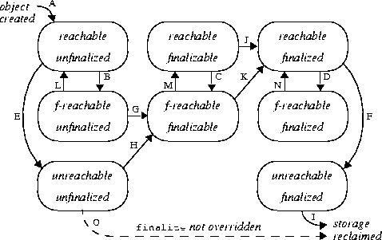

| Contents | Prev | Next | Index | Java Language Specification Second Edition |
CHAPTER 12
This chapter specifies activities that occur during execution of a program. It is organized around the life cycle of a Java virtual machine and of the classes, interfaces, and objects that form a program.
A Java virtual machine starts up by loading a specified class and then invoking the method main in this specified class. Section §12.1 outlines the loading, linking, and initialization steps involved in executing main, as an introduction to the concepts in this chapter. Further sections specify the details of loading (§12.2), linking (§12.3), and initialization (§12.4).
The chapter continues with a specification of the procedures for creation of new class instances (§12.5); and finalization of class instances (§12.6). It concludes by describing the unloading of classes (§12.7) and the procedure followed when a program exits (§12.8).
main of some specified class, passing it a single argument, which is an array of strings. In the examples in this specification, this first class is typically called Test.The precise semantics of virtual machine start-up are given in chapter 5 of The Java Virtual Machine Specification, Second Edition. Here we present an overview of the process from the viewpoint of the Java programming language.
The manner in which the initial class is specified to the Java virtual machine is beyond the scope of this specification, but it is typical, in host environments that use command lines, for the fully-qualified name of the class to be specified as a command-line argument and for following command-line arguments to be used as strings to be provided as the argument to the method main. For example, in a UNIX implementation, the command line:
will typically start a Java virtual machine by invoking methodjava Test reboot Bob Dot Enzo
main of class Test (a class in an unnamed package), passing it an array containing the four strings "reboot", "Bob", "Dot", and "Enzo".
We now outline the steps the virtual machine may take to execute Test, as an example of the loading, linking, and initialization processes that are described further in later sections.
main of class Test discovers that the class Test is not loaded-that is, that the virtual machine does not currently contain a binary representation for this class. The virtual machine then uses a class loader to attempt to find such a binary representation. If this process fails, then an error is thrown. This loading process is described further in §12.2.Test is loaded, it must be initialized before main can be invoked. And Test, like all (class or interface) types, must be linked before it is initialized. Linking involves verification, preparation and (optionally) resolution. Linking is described further in §12.3.
Verification checks that the loaded representation of Test is well-formed, with a proper symbol table. Verification also checks that the code that implements Test obeys the semantic requirements of the Java programming language and the Java virtual machine. If a problem is detected during verification, then an error is thrown. Verification is described further in §12.3.1.
Preparation involves allocation of static storage and any data structures that are used internally by the virtual machine, such as method tables. Preparation is described further in §12.3.2.
Resolution is the process of checking symbolic references from Test to other classes and interfaces, by loading the other classes and interfaces that are mentioned and checking that the references are correct.
The resolution step is optional at the time of initial linkage. An implementation may resolve symbolic references from a class or interface that is being linked very early, even to the point of resolving all symbolic references from the classes and interfaces that are further referenced, recursively. (This resolution may result in errors from these further loading and linking steps.) This implementation choice represents one extreme and is similar to the kind of "static" linkage that has been done for many years in simple implementations of the C language. (In these implementations, a compiled program is typically represented as an "a.out" file that contains a fully-linked version of the program, including completely resolved links to library routines used by the program. Copies of these library routines are included in the "a.out" file.)
An implementation may instead choose to resolve a symbolic reference only when it is actively used; consistent use of this strategy for all symbolic references would represent the "laziest" form of resolution.
In this case, if Test had several symbolic references to another class, then the references might be resolved one at a time, as they are used, or perhaps not at all, if these references were never used during execution of the program.
The only requirement on when resolution is performed is that any errors detected during resolution must be thrown at a point in the program where some action is taken by the program that might, directly or indirectly, require linkage to the class or interface involved in the error. Using the "static" example implementation choice described above, loading and linkage errors could occur before the program is executed if they involved a class or interface mentioned in the class Test or any of the further, recursively referenced, classes and interfaces. In a system that implemented the "laziest" resolution, these errors would be thrown only when an incorrect symbolic reference is actively used.
The resolution process is described further in §12.3.3.
main of class Test. This is permitted only if the class has been initialized (§12.4.1).
Initialization consists of execution of any class variable initializers and static initializers of the class Test, in textual order. But before Test can be initialized, its direct superclass must be initialized, as well as the direct superclass of its direct superclass, and so on, recursively. In the simplest case, Test has Object as its implicit direct superclass; if class Object has not yet been initialized, then it must be initialized before Test is initialized. Class Object has no superclass, so the recursion terminates here.
If class Test has another class Super as its superclass, then Super must be initialized before Test. This requires loading, verifying, and preparing Super if this has not already been done and, depending on the implementation, may also involve resolving the symbolic references from Super and so on, recursively.
Initialization may thus cause loading, linking, and initialization errors, including such errors involving other types.
The initialization process is described further in §12.4.
Test (during which other consequential loading, linking, and initializing may have occurred), the method main of Test is invoked.
The method main must be declared public, static, and void. It must accept a single argument that is an array of strings.
Class object to represent the class or interface.The precise semantics of loading are given in chapter 5 of The Java Virtual Machine Specification, Second Edition. Here we present an overview of the process from the viewpoint of the Java programming language.
The binary format of a class or interface is normally the class file format described in The Java Virtual Machine Specification cited above, but other formats are possible, provided they meet the requirements specified in §13.1. The method defineClass of class ClassLoader may be used to construct Class objects from binary representations in the class file format.
Well-behaved class loaders maintain these properties:
For further discussion of these issues, see The Java Virtual Machine Specification, Second Edition and the paper Dynamic Class Loading in the Java Virtual Machine, by Sheng Liang and Gilad Bracha, in Proceedings of OOPSLA '98, published as ACM SIGPLAN Notices, Volume 33, Number 10, October 1998, pages 36-44. A basic principle of the design of the Java programming language is that the type system cannot be subverted by code written in the language, not even by implementations of such otherwise sensitive system classes as ClassLoader and SecurityManager.
ClassLoader and its subclasses. Different subclasses of ClassLoader may implement different loading policies. In particular, a class loader may cache binary representations of classes and interfaces, prefetch them based on expected usage, or load a group of related classes together. These activities may not be completely transparent to a running application if, for example, a newly compiled version of a class is not found because an older version is cached by a class loader. It is the responsibility of a class loader, however, to reflect loading errors only at points in the program they could have arisen without prefetching or group loading.
If an error occurs during class loading, then an instance of one of the following subclasses of class LinkageError will be thrown at any point in the program that (directly or indirectly) uses the type:
ClassCircularityError: A class or interface could not be loaded because it would be its own superclass or superinterface (§13.4.4).
ClassFormatError: The binary data that purports to specify a requested compiled class or interface is malformed.
NoClassDefFoundError: No definition for a requested class or interface could be found by the relevant class loader.
OutOfMemoryError. Three different activities are involved in linking: verification, preparation, and resolution of symbolic references.The precise semantics of linking are given in chapter 5 of The Java Virtual Machine Specification, Second Edition. Here we present an overview of the process from the viewpoint of the Java programming language.
This specification allows an implementation flexibility as to when linking activities (and, because of recursion, loading) take place, provided that the semantics of the language are respected, that a class or interface is completely verified and prepared before it is initialized, and that errors detected during linkage are thrown at a point in the program where some action is taken by the program that might require linkage to the class or interface involved in the error.
For example, an implementation may choose to resolve each symbolic reference in a class or interface individually, only when it is used (lazy or late resolution), or to resolve them all at once while the class is being verified (static resolution). This means that the resolution process may continue, in some implementations, after a class or interface has been initialized.
Because linking involves the allocation of new data structures, it may fail with an OutOfMemoryError.
For the specification of the verification process, see the separate volume of this series, The Java Virtual Machine Specification, Second Edition.
If an error occurs during verification, then an instance of the following subclass of class LinkageError will be thrown at the point in the program that caused the class to be verified:
VerifyError: The binary definition for a class or interface failed to pass a set of required checks to verify that it obeys the semantics of the Java virtual machine language and that it cannot violate the integrity of the Java virtual machine. (See §13.4.2, §13.4.4, §13.4.8, and §13.4.15 for some examples.)
static fields (class variables and constants) for a class or interface and initializing such fields to the default values (§4.5.5). This does not require the execution of any source code; explicit initializers for static fields are executed as part of initialization (§12.4), not preparation.Implementations of the Java virtual machine may precompute additional data structures at preparation time in order to make later operations on a class or interface more efficient. One particularly useful data structure is a "method table" or other data structure that allows any method to be invoked on instances of a class without requiring a search of superclasses at invocation time.
Before a symbolic reference can be used it must undergo resolution, wherein a symbolic reference is checked to be correct and, typically, replaced with a direct reference that can be more efficiently processed if the reference is used repeatedly.
If an error occurs during resolution, then an error will be thrown. Most typically, this will be an instance of one of the following subclasses of the class IncompatibleClassChangeError, but it may also be an instance of some other subclass of IncompatibleClassChangeError or even an instance of the class IncompatibleClassChangeError itself. This error may be thrown at any point in the program that uses a symbolic reference to the type, directly or indirectly:
IllegalAccessError: A symbolic reference has been encountered that specifies a use or assignment of a field, or invocation of a method, or creation of an instance of a class, to which the code containing the reference does not have access because the field or method was declared private, protected, or default access (not public), or because the class was not declared public.
public is changed to be private after another class that refers to the field has been compiled (§13.4.6).
InstantiationError: A symbolic reference has been encountered that is used in class instance creation expression, but an instance cannot be created because the reference turns out to refer to an interface or to an abstract class.
abstract is changed to be abstract after another class that refers to the class in question has been compiled (§13.4.1).
NoSuchFieldError: A symbolic reference has been encountered that refers to a specific field of a specific class or interface, but the class or interface does not contain a field of that name.
NoSuchMethodError: A symbolic reference has been encountered that refers to a specific method of a specific class or interface, but the class or interface does not contain a method of that signature.
Additionally, an UnsatisfiedLinkError (a subclass of LinkageError) may be thrown if a class declares a native method for which no implementation can be found. The error will occur if the method is used, or earlier, depending on what kind of resolution strategy is being used by the virtual machine (§12.3).
static fields (class variables) declared in the class. Initialization of an interface consists of executing the initializers for fields (constants) declared there.Before a class is initialized, its superclass must be initialized, but interfaces implemented by the class are not initialized. Similarly, the superinterfaces of an interface are not initialized before the interface is initialized.
Before a class is initialized, its direct superclass must be initialized, but interfaces implemented by the class need not be initialized. Similarly, the superinterfaces of an interface need not be initialized before the interface is initialized.
A class or interface type T will be initialized immediately before the first occurrence of any one of the following:
Class and in package java.lang.reflect also causes class or interface initialization. A class or interface will not be initialized under any other circumstance.The intent here is that a class or interface type has a set of initializers that put it in a consistent state, and that this state is the first state that is observed by other classes. The static initializers and class variable initializers are executed in textual order, and may not refer to class variables declared in the class whose declarations appear textually after the use, even though these class variables are in scope (§8.3.2.3). This restriction is designed to detect, at compile time, most circular or otherwise malformed initializations.
As shown in an example in §8.3.2.3, the fact that initialization code is unrestricted allows examples to be constructed where the value of a class variable can be observed when it still has its initial default value, before its initializing expression is evaluated, but such examples are rare in practice. (Such examples can be also constructed for instance variable initialization; see the example at the end of §12.5). The full power of the language is available in these initializers; programmers must exercise some care. This power places an extra burden on code generators, but this burden would arise in any case because the language is concurrent (§12.4.3).
Before a class is initialized, its superclasses are initialized, if they have not previously been initialized.
class Super {
static { System.out.print("Super "); }
}
class One {
static { System.out.print("One "); }
}
class Two extends Super {
static { System.out.print("Two "); }
}
class Test {
public static void main(String[] args) {
One o = null;
Two t = new Two();
System.out.println((Object)o == (Object)t);
}
}
A reference to a class field causes initialization of only the class or interface that actually declares it, even though it might be referred to through the name of a subclass, a subinterface, or a class that implements an interface.Super Two false The classOneis never initialized, because it not used actively and therefore is never linked to. The classTwois initialized only after its superclassSuperhas been initialized.
class Super { static int taxi = 1729; }
class Sub extends Super {
static { System.out.print("Sub "); }
}
class Test {
public static void main(String[] args) {
System.out.println(Sub.taxi);
}
}
because the class1729
Sub is never initialized; the reference to Sub.taxi is a reference to a field actually declared in class Super and does not trigger initialization of the class Sub.Initialization of an interface does not, of itself, cause initialization of any of its superinterfaces.
interface I {
int i = 1, ii = Test.out("ii", 2);
}
interface J extends I {
int j = Test.out("j", 3), jj = Test.out("jj", 4);
}
interface K extends J {
int k = Test.out("k", 5);
}
class Test {
public static void main(String[] args) {
System.out.println(J.i);
System.out.println(K.j);
}
static int out(String s, int i) {
System.out.println(s + "=" + i);
return i;
}
}
The reference to1 j=3 jj=4 3
J.i is to a field that is a compile-time constant; therefore, it does not cause I to be initialized. The reference to K.j is a reference to a field actually declared in interface J that is not a compile-time constant; this causes initialization of the fields of interface J, but not those of its superinterface I, nor those of interface K. Despite the fact that the name K is used to refer to field j of interface J, interface K is not initialized.Class object has already been verified and prepared, and that the Class object contains state that indicates one of four situations:
Class object is verified and prepared but not initialized.
Class object is being initialized by some particular thread T.
Class object is fully initialized and ready for use.
Class object is in an erroneous state, perhaps because the verification or preparation step failed, or because initialization was attempted and failed.
Class object that represents the class or interface to be initialized. This involves waiting until the current thread can obtain the lock for that object (§17.13).
wait on this Class object (which temporarily releases the lock). When the current thread awakens from the wait, repeat this step.
Class object and complete normally.
Class object and complete normally.
Class object is in an erroneous state, then initialization is not possible. Release the lock on the Class object and throw a NoClassDefFoundError.
Class object is now in progress by the current thread and release the lock on the Class object.
Class object represents a class rather than an interface, and the superclass of this class has not yet been initialized, then recursively perform this entire procedure for the superclass. If necessary, verify and prepare the superclass first. If the initialization of the superclass completes abruptly because of a thrown exception, then lock this Class object, label it erroneous, notify all waiting threads, release the lock, and complete abruptly, throwing the same exception that resulted from initializing the superclass.
final class variables and fields of interfaces whose values are compile-time constants are initialized first (§8.3.2.1, §9.3.1, §13.4.8).
Class object, label it fully initialized, notify all waiting threads, release the lock, and complete this procedure normally.
Error or one of its subclasses, then create a new instance of the class ExceptionInInitializerError, with E as the argument, and use this object in place of E in the following step. But if a new instance of ExceptionInInitializerError cannot be created because an OutOfMemoryError occurs, then instead use an OutOfMemoryError object in place of E in the following step.
Class object, label it erroneous, notify all waiting threads, release the lock, and complete this procedure abruptly with reason E or its replacement as determined in the previous step.
(Due to a flaw in some early implementations, a exception during class initialization was ignored, rather than causing an ExceptionInInitializerError as described here.)
Class object is fully initialized and ready for use, then the invocation of the initialization procedure is no longer necessary and it may be eliminated from the code-for example, by patching it out or otherwise regenerating the code.Compile-time analysis may, in some cases, be able to eliminate many of the checks that a type has been initialized from the generated code, if an initialization order for a group of related types can be determined. Such analysis must, however, fully account for concurrency and for the fact that initialization code is unrestricted.
A new class instance may be implicitly created in the following situations:
String literal (§3.10.5) may create a new String object to represent that literal. (This might not occur if the same String has previously been interned (§3.10.5).)
String object to represent the result. String concatenation operators may also create temporary wrapper objects for a value of a primitive type.
Whenever a new class instance is created, memory space is allocated for it with room for all the instance variables declared in the class type and all the instance variables declared in each superclass of the class type, including all the instance variables that may be hidden (§8.3). If there is not sufficient space available to allocate memory for the object, then creation of the class instance completes abruptly with an OutOfMemoryError. Otherwise, all the instance variables in the new object, including those declared in superclasses, are initialized to their default values (§4.5.5).
Just before a reference to the newly created object is returned as the result, the indicated constructor is processed to initialize the new object using the following procedure:
this), then evaluate the arguments and process that constructor invocation recursively using these same five steps. If that constructor invocation completes abruptly, then this procedure completes abruptly for the same reason; otherwise, continue with step 5.
this). If this constructor is for a class other than Object, then this constructor will begin with an explicit or implicit invocation of a superclass constructor (using super). Evaluate the arguments and process that superclass constructor invocation recursively using these same five steps. If that constructor invocation completes abruptly, then this procedure completes abruptly for the same reason. Otherwise, continue with step 4.
class Point {
int x, y;
Point() { x = 1; y = 1; }
}
class ColoredPoint extends Point {
int color = 0xFF00FF;
}
class Test {
public static void main(String[] args) {
ColoredPoint cp = new ColoredPoint();
System.out.println(cp.color);
}
}
ColoredPoint is created. First, space is allocated for the new ColoredPoint, to hold the fields x, y, and color. All these fields are then initialized to their default values (in this case, 0 for each field). Next, the ColoredPoint constructor with no arguments is first invoked. Since ColoredPoint declares no constructors, a default constructor of the form:
ColoredPoint() { super(); }
This constructor then invokes the Point constructor with no arguments. The Point constructor does not begin with an invocation of a constructor, so the compiler provides an implicit invocation of its superclass constructor of no arguments, as though it had been written:
Point() { super(); x = 1; y = 1; }
Object which takes no arguments is invoked.
The class Object has no superclass, so the recursion terminates here. Next, any instance initializers, instance variable initializers of Object are invoked. Next, the body of the constructor of Object that takes no arguments is executed. No such constructor is declared in Object, so the compiler supplies a default one, which in this special case is:
Object() { }
Next, all initializers for the instance variables of class Point are executed. As it happens, the declarations of x and y do not provide any initialization expressions, so no action is required for this step of the example. Then the body of the Point constructor is executed, setting x to 1 and y to 1.
Next, the initializers for the instance variables of class ColoredPoint are executed. This step assigns the value 0xFF00FF to color. Finally, the rest of the body of the ColoredPoint constructor is executed (the part after the invocation of super); there happen to be no statements in the rest of the body, so no further action is required and initialization is complete.
Unlike C++, the Java programming language does not specify altered rules for method dispatch during the creation of a new class instance. If methods are invoked that are overridden in subclasses in the object being initialized, then these overriding methods are used, even before the new object is completely initialized. Thus, compiling and running the example:
class Super {
Super() { printThree(); }
void printThree() { System.out.println("three"); }
}
class Test extends Super {
int three = (int)Math.PI; // That is, 3
public static void main(String[] args) {
Test t = new Test();
t.printThree();
}
void printThree() { System.out.println(three); }
}
This shows that the invocation of03
printThree in the constructor for class Super does not invoke the definition of printThree in class Super, but rather invokes the overriding definition of printThree in class Test. This method therefore runs before the field initializers of Test have been executed, which is why the first value output is 0, the default value to which the field three of Test is initialized. The later invocation of printThree in method main invokes the same definition of printThree, but by that point the initializer for instance variable three has been executed, and so the value 3 is printed.See §8.8 for more details on constructor declarations.
Object has a protected method called finalize; this method can be overridden by other classes. The particular definition of finalize that can be invoked for an object is called the finalizer of that object. Before the storage for an object is reclaimed by the garbage collector, the Java virtual machine will invoke the finalizer of that object.Finalizers provide a chance to free up resources that cannot be freed automatically by an automatic storage manager. In such situations, simply reclaiming the memory used by an object would not guarantee that the resources it held would be reclaimed.
The Java programming language does not specify how soon a finalizer will be invoked, except to say that it will happen before the storage for the object is reused. Also, the language does not specify which thread will invoke the finalizer for any given object. It is guaranteed, however, that the thread that invokes the finalizer will not be holding any user-visible synchronization locks when the finalizer is invoked. If an uncaught exception is thrown during the finalization, the exception is ignored and finalization of that object terminates.
The finalize method declared in class Object takes no action.
The fact that class Object declares a finalize method means that the finalize method for any class can always invoke the finalize method for its superclass, which is usually good practice. (Unlike constructors, finalizers do not automatically invoke the finalizer for the superclass; such an invocation must be coded explicitly.)
For efficiency, an implementation may keep track of classes that do not override the finalize method of class Object, or override it in a trivial way, such as:
protected void finalize() throws Throwable {
super.finalize();
}
We encourage implementations to treat such objects as having a finalizer that is not overridden, and to finalize them more efficiently, as described in §12.6.1.
The package java.lang.ref describes weak references, which interact with garbage collection and finalization. As with any API that has special interactions with the language, implementors must be cognizant of any requirements imposed by the java.lang.ref API. This specification does not discuss weak references in any way. Readers are referred to the API documentation for details.
A reachable object is any object that can be accessed in any potential continuing computation from any live thread. Optimizing transformations of a program can be designed that reduce the number of objects that are reachable to be less than those which would naively be considered reachable. For example, a compiler or code generator may choose to set a variable or parameter that will no longer be used to null to cause the storage for such an object to be potentially reclaimable sooner. A finalizer-reachable object can be reached from some finalizable object through some chain of references, but not from any live thread. An unreachable object cannot be reached by either means.
An unfinalized object has never had its finalizer automatically invoked; a finalized object has had its finalizer automatically invoked. A finalizable object has never had its finalizer automatically invoked, but the Java virtual machine may eventually automatically invoke its finalizer.
The life cycle of an object obeys the following transition diagram, where we abbreviate "finalizer-reachable" as "f-reachable":

When an object is first created (A), it is reachable and unfinalized.
As references to an object are discarded during program execution, an object that was reachable may become finalizer-reachable (B, C, D) or unreachable (E, F). (Note that a finalizer-reachable object never becomes unreachable directly; it becomes reachable when the finalizer from which it can be reached is invoked, as explained below.)
If the Java virtual machine detects that an unfinalized object has become finalizer-reachable or unreachable, it may label the object finalizable (G, H); moreover, if the object was unreachable, it becomes finalizer-reachable (H).
If the Java virtual machine detects that a finalized object has become unreachable, it may reclaim the storage occupied by the object because the object will never again become reachable (I).
At any time, a Java virtual machine may take any finalizable object, label it finalized, and then invoke its finalize method in some thread. This causes the object to become finalized and reachable (J, K), and it also may cause other objects that were finalizer-reachable to become reachable again (L, M, N).
A finalizable object cannot also be unreachable; it can be reached because its finalizer may eventually be invoked, whereupon the thread running the finalizer will have access to the object, as this (§15.8.3). Thus, there are actually only eight possible states for an object.
After an object has been finalized, no further action is taken until the automatic storage management determines that it is unreachable. Because of the way that an object progresses from the unfinalized state through the finalizable state to the finalized state, the finalize method is never automatically invoked more than once by a Java virtual machine for each object, even if the object is again made reachable after it has been finalized.
Explicit invocation of a finalizer ignores the current state of the object and does not change the state of the object from unfinalized or finalizable to finalized.
If a class does not override method finalize of class Object (or overrides it in only a trivial way, as described above), then if instances of such a class become unreachable, they may be discarded immediately rather than made to await a second determination that they have become unreachable. This strategy is indicated by the dashed arrow (O) in the transition diagram.
Therefore, we recommend that the design of finalize methods be kept simple and that they be programmed defensively, so that they will work in all cases.
As an example, if a circularly linked group of unfinalized objects becomes unreachable (or finalizer-reachable), then all the objects may become finalizable together. Eventually, the finalizers for these objects may be invoked, in any order, or even concurrently using multiple threads. If the automatic storage manager later finds that the objects are unreachable, then their storage can be reclaimed.
It is straightforward to implement a class that will cause a set of finalizer-like methods to be invoked in a specified order for a set of objects when all the objects become unreachable. Defining such a class is left as an exercise for the reader.
Here is the rationale for the rule given in the previous paragraph:
Class unloading is an optimization that helps reduce memory use. Obviously, the semantics of a program should not depend on whether and how a system chooses to implement an optimization such as class unloading. To do otherwise would compromise the portability of programs. Consequently, whether a class or interface has been unloaded or not should be transparent to a program.
However, if a class or interface C was unloaded while its defining loader was potentially reachable, then C might be reloaded. One could never ensure that this would not happen. Even if the class was not referenced by any other currently loaded class, it might be referenced by some class or interface, D, that had not yet been loaded. When D is loaded by C's defining loader, its execution might cause reloading of C.
Reloading may not be transparent if, for example, the class has:
Class object is dependent on its identity. Therefore it is, in general, impossible to reload a class or interface in a completely transparent manner. Since we can never guarantee that unloading a class or interface whose loader is potentially reachable will not cause reloading, and reloading is never transparent, but unloading must be transparent, it follows that one must not unload a class or interface while its loader is potentially reachable. A similar line of reasoning can be used to deduce that classes and interfaces loaded by the bootstrap loader can never be unloaded.
One must also argue why it is safe to unload a class C if its defining class loader can be reclaimed. If the defining loader can be reclaimed, then there can never be any live references to it (this includes references that are not live, but might be resurrected by finalizers). This, in turn, can only be true if there are can never be any live references to any of the classes defined by that loader, including C, either from their instances or from code.
Class unloading is an optimization that is only significant for applications that load large numbers of classes and that stop using most of those classes after some time. A prime example of such an application is a web browser, but there are others. A characteristic of such applications is that they manage classes through explicit use of class loaders. As a result, the policy outlined above works well for them.
Strictly speaking, it is not essential that the issue of class unloading be discussed by this specification, as class unloading is merely an optimization. However, the issue is very subtle, and so it is mentioned here by way of clarification.
exit method of class Runtime or class System and the exit operation is not forbidden by the security manager.
| Contents | Prev | Next | Index | Java Language Specification Second Edition |